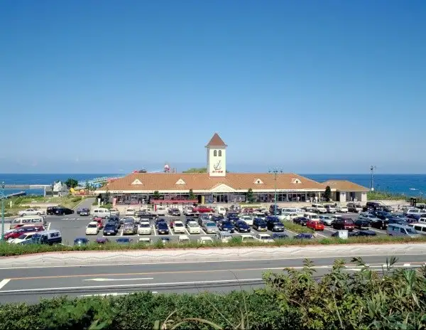
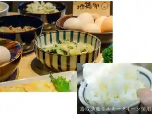
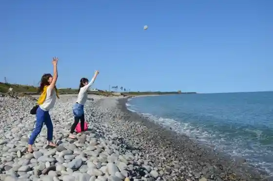

Japan / Tottori / Kotoura
Kotoura · Tottori
Kotoura
Highlighted on the Tottori map.

Kotoura Town Hall


Sights · Things to do · Places to eat · Places to stay · Day-to-day services
Nearby in Tottori: ← Kofu · Kurayoshi →
Other towns: Chizu · Daisen · Hiezu · Hino · Hoki · Hokuei · Iwami · Kofu · Kurayoshi · Misasa · Nanbu · Nichinan · Sakaiminato · Tottori · Wakasa · Yazu · Yonago · Yurihama
All towns in Tottori · Back to all prefectures